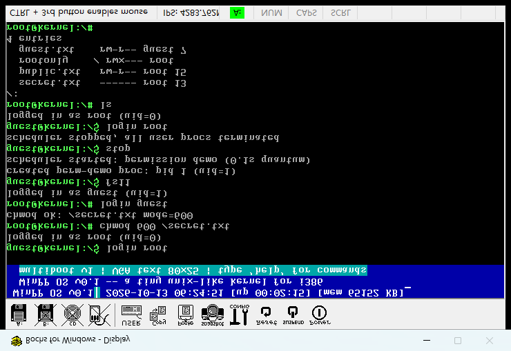
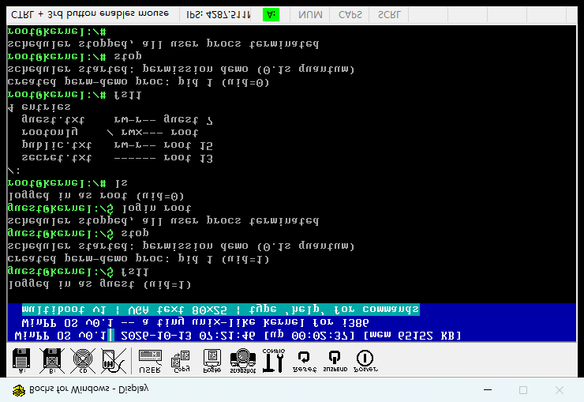

一句话意义：这台系统第一次有了"主人"和"客人"——root 是管理员（uid=0，想干什么干什么），guest 是普通用户；每个文件/目录都标了谁拥有它、谁能读、谁能写。guest 想读 root 的私密文件？被拒绝（EACCES）。全部 Bochs 实机 + 串口 + 截图验证通过。
| 命令 / 调用 | 作用 |
|---|---|
| login <user> | 切换身份（root 或 guest），提示符随之变 # 或 $ |
| whoami | 显示当前用户名 |
| id | 显示 uid / gid |
| chmod <oct> <path> | 改文件权限（八进制，如 644/600/755），root/属主可改 |
| fs11 | 启动权限演示进程 user11（getuid + 读公开/私有 + 写文件） |
| syscall 15 getuid() | 用户进程查询自己的 UID |
| syscall 16 chmod() | 用户进程改文件权限 |
[user] login guest -> uid=1 [fs11] demo proc pid 1 uid=1 [pid1] user11 uid=001 # getuid = 1（guest） [pid1] pub-read-OK # 公开文件 0644：人人可读 ✓ [fs] open '/secret.txt' EACCES uid=1 [pid1] sec-read-DENIED # 私有文件 0600：guest 被拒 ✓✓ [fs] open created '/guest.txt' fd=3 uid=1 # guest 建自己的文件，属主=1 [pid1] guest-write-OK
[user] login root -> uid=0 [fs11] demo proc pid 1 uid=0 [pid1] user11 uid=000 # getuid = 0（root） [pid1] pub-read-OK [fs] open '/secret.txt' fd=0 (exist) [pid1] sec-read-OK # root 读私有文件：放行 ✓ [pid1] guest-write-OK
[fs] chmod '/secret.txt' mode=1a4 uid=0 # root: chmod 644（放权） [fs] open '/secret.txt' fd=0 (exist) [pid1] sec-read-OK # guest 立刻能读了 ✓ [fs] chmod '/secret.txt' mode=180 uid=0 # root: chmod 600（收紧） [fs] open '/secret.txt' EACCES uid=1 [pid1] sec-read-DENIED # guest 立刻被拒 ✓ [fs] chdir '/rootonly' EACCES (no x) # guest 进 root 私有目录被拒 [fs] chdir '/rootonly' # root 进入成功


最初 k_atoi("644")=644 十进制，与 Linux 的 chmod 644（八进制）含义完全不同。修正：新增 k_octal 八进制解析，"644" → 0o644。
Bochs 注入脚本字符表没有 / 和 .，导致 /secret.txt 实际敲成 secrettxt。修正：_sendkeys.py 补 VK 0xBF(/) 与 0xBE(.) 映射。